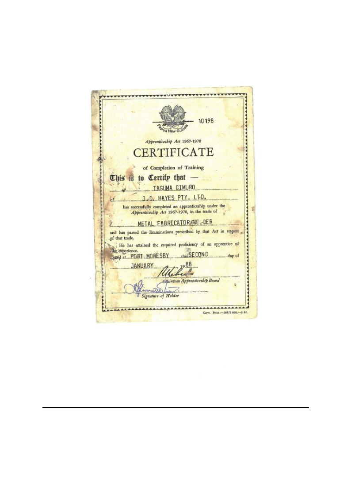

<html>
<br>
<head>
<title>http:website</title>
</head>
<blockquote cite>
<body bgcolor="#FFFFFF">
<body text="black">


<h2>MR. TAGUMA GIMURO</h2>

<p>C/-Newcrest Mining Limited  | Lihir Gold Limited | P.O. Box 789 | Port Moresby | National Capital District | Papua New Guinea |</p>
<br>
<ol>  
<h2><u>PERSONAL DETAILS:</u></h2>
<i>Name:</i> <b>TAGUMA</b><br>
<I>Surename:</i> <b>GIMURO</b><br>
<i>Date of Birth:</i> <b>26<sup>th</sup> JUNE 1967</b><br>
<i>Sex:</i> <b>MALE</b><br>
<i>Marital Status:</i> <b>MARRIED</b><br>
<i>Religion:</i> <b>UNITED CHURCH</b><br>
<i>Languages:</i> <b>ENGLISH, PIDGIN & MOTU</b><br>
<i>Currently Living:</i> <b>5 MILE PORT MORESBY</b><br>
<i>Place of Origin:</i> <b>IMUAGORO VILLAGE</b><br>
<I>Home Town:</i> <b>PORT MORESBY</B><BR>
<i>Province:</i> <b>CENTRAL</B><BR>
<i>District:</i> <b>RIGO</b><br>
<i>Nationality:</i> <b>PAPUA NEW GUINEA</b>
<i>Postal codes:</i> <b>P:3053871/72041025|E:
</ol>
<ol>
<h3><u>Contact Details:</u></h3>
<i>
<ul style="list-style-type:disc">
<li>Digicel Network: <b>+(675) 706668529</b><br></li>
</i>
</ul>
<br>				
<h4>Mail address;</h4>
<i>
<ul style="list-style-type:square">
<li>G-mail: <b>tagumagimuro26@gmail.com</b><br></li>
</i>
</ul>

<br>
</ol>
<h2><u>Objectives and Skills</u></h2>
<p>I am a highly motivated and enthusiastic person. I have the desire to learn and help in your company my strengths include<br> excellent communication as well as the ability to learn and work as an individual. I am honest, reliable and trust worthy.</p>

<h2><u>CARRIER OBJECTIVES</u></h2>
<p><b><u><i>SHORT TERM OBJECTIVES:</i></u></b><p>
<p>To serve on full time basis with a forward moving organization with a Solid performance and future projections.<br> As part of a team, I want to Add value and continue to grow with the organization. Be success in my chosen field,<br> I can achieve this by committed, self-discipline
and hard working.</p>
<p><b><u><i>LONG TERM OBJECTIIVES:</i></u></b><p>
<p>This depends on where the organization goes in the long run. I plan to work extra hard in order to move into position<br> of responsibility where I can lead a team of professions. Be innovative creative, and efficient in my personal carrier development.</p>
<br>

<h1><u>EDUCATIONAL BACKGROUND</u></h1>

<table border="1">
<tr>
<th style="background-color:#808000;">YEAR</th>
<th style="background-color:#808000;">PRIMARY/SECONDARY/TERTERY</th>
<th style="background-color:#808000;">ACHIEVEMENTS</th>
<tr>
<th>1973 - 1978</th> 
<td><b>VATUGORO PRIMARY</b></td>
<td><b>GRADE (8) CERTIFICATE</td>
</tr>
<tr>
<th>1979 - 1982</th> 
<th><b>KWIKILA PROVINCIAL HIGH SCHOOL</th> 
<th>GRADE (10) CERTIFICATE</th>
</tr>
<tr>
<th>1983 - 	</th> 
<th><b>GOROKA TECHNICAL COLLEGE</th> 
<th>PETT CERTIFICATE</th>
</tr>
</table>
<br>
<br>
<br>
<br>


<br>
<br>
<br>
<br>
<br>

<h1><u>WORK HISTORY</u></h1>


<table border="5">
<tr>
  <th style="background-color:blue;">YEAR</th>
  <th style="background-color:blue;">COMPANY</th>
  <th style="background-color:blue;">ROLES RESPONSIBILITY</th>
</tr>
  <th style="background-color:gold;">CURRENT 2019 - CURRENT</th>
  <th style="background-color:gold;">NEWCREST MINING LIMITED (LIHIR)</th>
  <th style="background-color:gold;">PLANNER/SCOPER</th>
</tr>
<tr>
  <td style="background-color:gold;">2016 - 2019</td>
  <td style="background-color:gold;">NEWCREST MINING LIMITED (LIHIR)</td>
  <td style="background-color:gold;">QA & ESTIMATOR</td>
</tr>
<tr>
  <td style="background-color:gold;">2014 - 2016</td>
  <td style="background-color:gold;">SOUTH PACIFIC WORKFORCE PNG & OVERSEAS)</td>
  <td style="background-color:gold;">NATIONAL SUPERVISOR</td>
</tr>

<tr>
  <td style="background-color:gold;">2013 - 2014</td>
  <td style="background-color:gold;">CBIC HGDC (LNG HIDES CONDITION PLANT HIDES)</td>
  <td style="background-color:gold;">PIPING QC</td>
</tr>
<tr>
  <td style="background-color:gold;">2012 - 2013</td>
  <td style="background-color:gold;">LIHIR CONSTRUCTION L C S (LIHIR)</td>
  <td style="background-color:gold;">SITE SUPERVISOR</td>
</tr>
<tr>
  <td style="background-color:gold;">2010 - 2012</td>
  <td style="background-color:gold;">POGERA JOINT VENTURE PJV UNDER GROUND (POGERA)</td>
  <td style="background-color:gold;">SUPERVISOR FABSHOP</td>
</tr>
<tr>
  <td style="background-color:gold;">2008 - 2010</td>
  <td style="background-color:gold;">J D HAYERS P/L (PORT MORESBY</td>
  <td style="background-color:gold;">SITE SUPERVISOR</td>
</tr>
<tr>
  <td style="background-color:gold;">2006 - 2008</td>
  <td style="background-color:gold;">J D A WORKMAN OIL RIG (PURARI)</td>
  <td style="background-color:gold;">HIGH PRESSURE WELDER</td>
</tr>
<tr>
  <td style="background-color:gold;">1999 - 2006</td>
  <td style="background-color:gold;">LMC/LGL (LIHIR)</td>
  <td style="background-color:gold;">BOILER MAKER / EXOTIC WELDER</td>
</tr>
<tr>
  <td style="background-color:gold;">1997 - 1999</td>
  <td style="background-color:gold;">AISI BISHMAN (LIHIR)</td>
  <td style="background-color:gold;">BOILER MAKER / HIGH PRESSURE WELDER</td>
</tr>
<tr>
  <td style="background-color:gold;">1996 - 1997</td>
  <td style="background-color:gold;">SAMA CONSTRUCTION (LIHIR)</td>
  <td style="background-color:gold;">BOILER MAKER / HIGH PRESSURE WELDER</td>
</tr>
<tr>
  <td style="background-color:gold;">1995 - 1996</td>
  <td style="background-color:gold;">AISI BISHMAN</td>
  <td style="background-color:gold;">BOILER MAKER / HIGH PRESSURE WELDER</td>
</tr>
<tr>
  <td style="background-color:gold;">1994 - 1995</td>
  <td style="background-color:gold;">J D A (MISIMA MINES)</td>
  <td style="background-color:gold;">BOILER MAKER / WELDER</td>
</tr>
<tr>
  <td style="background-color:gold;">1992 - 1994</td>
  <td style="background-color:gold;">TABULIL ENGINEERING (TABUBIL)</td>
  <td style="background-color:gold;">BOILER MAKER / WELDER</td>
</tr>
<tr>
  <td style="background-color:gold;">1991 - 1992</td>
  <td style="background-color:gold;">HORNIBROOK (PORT MORESBY)</td>
  <td style="background-color:gold;">BOILER MAKER</td>
</tr>
<tr>
  <td style="background-color:gold;">1989 - 1991</td>
  <td style="background-color:gold;">TABUBIL ENGINEERING (TABUBIL)</td>
  <td style="background-color:gold;">BOILER MAKER / WELDER</td>
</tr>
<tr>
  <td style="background-color:gold;">1984 - 1988</td>
  <td style="background-color:gold;">J D HAYERS P/L (PORT MORESBY</td>
  <td style="background-color:gold;">APPENTICE (BMW)</td>
</tr>
</table>
<br>
<br>
<br>
<br>
<br>

<h2><U>WELDERS QUALIFICATION (HIGH PRESSURE TICKETS)</U></h2>
<ol>  
<ul style="list-style-type:disc">
<li>Metlap (OK TED):<i>[1<sup>st</sup> June 1992]</i><br></li>
<li>ERTS 6G (45)AS4037 & AS4041: <i>[Dec 1977 - Feb 1998]</i><br></li>
<li>ERTS 2B (HORIZONAL)<br></li>
<li>ERTS 3G (VERTICAL)<br></li>
<li>ERTS Stainless Alloy 20 6G Position AS4041 & AS4037<br></li>
<li>INTICO (POWER HOUSE LIHIR) 08.01.97<br></li>
<li>MIS (Marine Insection Services P/L) 6G Position AS4037 - 1999 (CL1)<br></li>
</ul>
</ol>

<h2>CERTIFICATE GAIN / ATTIN</h2>
<ol>  
<ul style="list-style-type:disc">
<li>Time Management 200 (Lihir)<br></li>
<li>Spit Water Production (Lihir)<br></li>
<li>Safe Work and Isolations Policy and Procedures (SWIPP) - (Lihir)<br></li>
<li>Basic Decision Making (Lihir)<br></li>
<li>Oxygen Safe Familiarization (Lihir)<br></li>
<li>Elevated Work Platform EWP Course (Lihir)<br></li>
<li>Vehicle Loading Crane CV Course (Lihir)<br></li>
<li>Sel Managememt (Lihir)<br></li>
<li>Lihir Team Work (Lihir)<br></li>
<li>Defensive Driving Course (Lihir)<br></li>
<li>Production Training Course (Lihir)<br></li>
<li>Heart Starter CPR (Lihir)<br></li>
<li>SWIPR - 001 : Introduction to Isolation and Tagging<br></li>
<li>SWIPR - 002 : Introduction to Permits<br></li>
<li>SWIPR - 003 : Confirmed Space Recognition<br></li>
<li>Professional Supervisor Certificate (QUEEN'S UNIVERSITY)<br></li>
<li>Certficate of Proficiency Underground Induction (Pogera)<br></li>
<li>certicate of Attendance (Pogera)<br></li>
<li>Fall injury Prevention systems for Working Safely at Heigths (Pogera)<br></li>
<li>Safety Appreciation Certificate MONADELPHOUS (Pogera)<br></li>
<li>Enter & Work in a Confined Space (Lihir)<br></li>
<li>Area Warden Training (Lihir)<br></li>
<li>CPR Defibrillation (Lihir)<br></li>
<li>MS Word Introduction (Lihir)<br></li>
<li>MS Excel Introduction (Lihir)<br></li>
</ul>
</ol>
<br>
<br>
<p>Certificate and other relavent documents are attached to this link. Click to open:<a href="https://github.com/pdgeg
ora/Attachment/">https://github.com/pdgegora/Attachment/
</a>
<br>
<br>
<br>
<br>
<br>
<br>
<br>
<br>
<br>
<br>

<h2>Certificate and other relavent documents are attached below:</h2>
<blockquote cite>
<bgcolor="black">



</blockquote> 
<br>
<br>
<br>
<br>
<br>
<h1><u>Other Personal Information:</u></h1>
<p>Talking openly with different people and friendly, attending fellowship, playing sports, watching movies,<br> reading books and listening music.</p>
<br>
<br>
<br>
<br>
<br>
<br>
<br>
<br>
<br>
<br>
<blockquote cite>
<h2><u>Referees:</p></u></h2>
<p><b><u>Amo Homuo</u></b> | <b>Newcrest Mining</b> | Contacts: +(675) 70922262 |<br> 
<p><b><u>George</u></b> | Work Force South Pacific |<br>
<p><b><u>Stuart Willson</u></b> | Lihir Construction Services LCS |
<p><b><u>Craig Aitken</u></b> | Pogera Mining Underground |
<p><b><u>Collin Hutter</u></b> | Aisi Bishman |
<p><b><u>Collin Crane</u></b> | J D Hayes |
</blockquote>
</blockquote>
</body>
</html>
